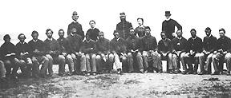

|
Few of the black men who enlisted in Union ranks had any formal education, and
only a small portion could read or write. Most of these had been free before the
war, and they were concentrated in regiments from the Northern states, a few
border states, and Louisiana. Illiterate soldiers could not perform all the
duties necessary to keep a modern army moving. Officers had to accompany them on
the most routine missions to read sign posts and prevent wily impersonators from
countermanding legitimate authority. The shortage of literate blacks to serve as
noncommissioned officers also threatened to bury white commanders under an
avalanche of paper work. Thus the same military necessity that impelled black
enlistment also necessitated that at least some black soldiers be taught to read
and write.
Military necessity was not the only motive in the establishment of regimental
schools. Most Americans believed that education was the birthright of a free
people. It allowed men and women to rise to the full measure of their abilities,
and it provided the best source of social discipline. In one form or another,
Union officers shared these sentiments. Antislavery idealists who led the early
black regiments saw education as a means for blacks to shed the shackles of
bondage and enjoy the full benefits of liberty after the war. But even those
officers who did not share the abolitionist vision often pressed their soldiers
to attend classes so that they would not be, as one officer termed it, "common
niggers."
|

For many African-American troops, their time in the service
was the first opportunity they had to get an education. Often, the chaplains or
officers would organize formal teaching sessions in the soldiers' off hours. The
soldiers shown here are holding open primers in their laps.
|
For the most part, officers did not have to press very hard. Black soldiers
desired to read and write so they could communicate with their families, and,
like whites, they too saw education as a means to improve themselves. They
petitioned for regimental schools, purchased their own books, and paid teachers
from their own funds. When teachers were not available, they taught each other,
drawing on the knowledge of the few who had attained scraps of a formal
education. In some units, blacks formed literary societies and established
regimental libraries. "Cartridge box and spelling book are attached to the same
belt," noted one regimental chaplain.
Regimental schools that would provide basic education had no precedent in the
American army, and the War Department offered little direction for their
development. Schools for black soldiers sprang up haphazardly and depended, in
large measure, on the concern of commanding officers. Although many ignored the
educational needs of their men, some--pressed by black soldiers--developed
systematic programs to teach basic skills and provide for military advancement.
General Godfrey Weitzel, commander of the black 25th Army Corps, ordered his
officers to erect schoolhouses for their men and taxed sutlers within his
command to ensure the success of these efforts. As Weitzel's orders suggest,
direction of these educational programs fell to regimental and company officers
who controlled the soldier's daily routine. Some officers emphasized the
instruction of only a few black soldiers to relieve themselves of onerous
clerical duties; others aimed for universal literacy, occasionally adding a
sprinkling of the liberal arts. Pedagogical practices varied as widely as
interest in education itself. While some officers used the carrot of free time
and military advancement to encourage the participation of enlisted men, others
wielded the stick, making school attendance mandatory and threatening to demote
illiterate black noncommissioned officers. And, like other educators, some used
a bit of both approaches.
Regimental chaplains generally directed the army schools. Their commitment also
varied widely. The Reverend Henry M. Turner, a militant black abolitionist
deeply imbued with the importance of education, pressed his superiors for books,
time, and tents to operate his school. Other chaplains used their connections
with missionary organizations to secure financial support and teachers from the
North. Still others disdained their charges, believed blacks inherently
inferior, and saw no purpose in educating the soldiers.
The chaplains generally linked black education with their own concern for the
moral and spiritual condition of their men. For many, true education and true
religion were one. In the spring of 1864, Congress ordered army chaplains to
report monthly on the spiritual and moral condition of their units. The order
flowed slowly through the chain of command, but by the beginning of 1865 the
chaplains' reports flooded the Adjutant General's Office. These monthly
summaries reveal a good deal about the nature of army education and the
religious life of black soldiers as seen by the men who bore primary
responsibility for their educational and spiritual affairs.
Even under the most concerned company officers and chaplains, education was
subordinate to other military duties. The absence of direct War Department
instructions and the press of the war gave education a low priority. Few
commanders invested in education when orders to break camp would mean that a
carefully constructed school house had to be left behind, along with books,
blackboards, and civilian teachers. Wartime educational efforts appear to have
been more concerned with producing a few literate noncommissioned officers than
with uplifting the masses. But in late 1864, as the fighting ended in some
theaters, regimental schools began to function with greater regularity.
These educational efforts had mixed results. At the end of the war, most black
privates still could not sign their names. This was especially true in the
regiments raised among the plantation slaves of the Lower South. But, even in
these regiments, some literate noncommissioned officers could be found. Among
the Northern, largely free black regiments, about one-quarter of the privates
could sign their names when they were discharged, and literacy was nearly
universal among the noncommissioned officers. Some Southern, and probably slave,
regiments also made remarkable progress. The 62nd U.S. Colored Infantry, raised
in Missouri in late 1863 as the 1st Missouri Colored Infantry, ordered to the
Department of the Gulf in 1864, and incorporated into the 25th Army Corps at
war's end, exemplified the achievements of interested enlisted men and concerned
officers. Upon leaving the regiment in January 1866, its commander boasted that
"of four hundred and thirty one men, ninety nine have learned to read and write
understandingly; two hundred and eighty-four can read; three hundred and thirty
seven can spell in words of two syllables, and are learning to read, not more
than ten men have failed to learn the alphabet."
Source: Freedmen and Southern Society Project, Freedom, A
Documentary History of Emancipation, 1861-1867 (New York: Cambridge
University Press, 1985), 611-13.
|